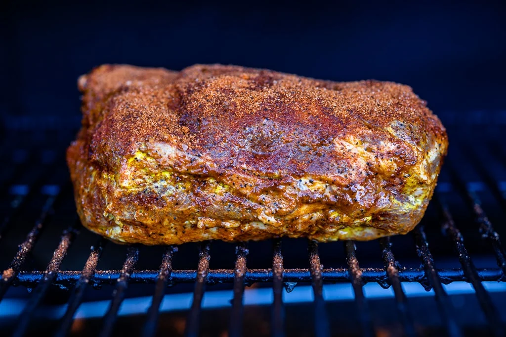

Simple Smoked Pulled Pork

Credit to Susie Bulloch and "Hey Grill Hey" for this
recipe
Description
My Simple Smoked Pulled Pork Butt (AKA Smoked Pork Shoulder) is a go-to any time I am looking to feed a hungry crowd
and don’t want too much fuss. With only 3 ingredients, you’re looking at some good, classic BBQ with plenty of
flavor.
Ingredients
- 1 8-10 pound bone-in pork shoulder roast (AKA Boston butt)
- 2-3 Tablespoons yellow mustard
- ¼ cup Signature Sweet Rub
- 1 Tablespoon Signature Sweet Rub (for later use)
Steps
- Preheat the smoker. Preheat your smoker to 225 degrees F for indirect smoking. I recommend hickory or apple for
this recipe.
- Prep the meat. Remove your roast from the packaging and wipe it down on all sides with paper towels, cleaning
off any small bone fragments or extra liquid on the exterior.
- Slather the pork butt in mustard. Slather the entire exterior of the pork shoulder with the yellow mustard.
- Season with Sweet Rub. Season your pork roast on all sides, top and bottom, with the Homemade BBQ Sweet Rub.
Don't worry about rubbing the seasoning into the meat, just be sure it is liberally coated all over.
- Smoke the pork butt. Place your seasoned roast on the smoker fat side up, preferably in the middle of the grate
avoiding any direct hot spots. Close the lid and smoke the pork until it reaches an internal temperature of at
least 195 degrees F. You can cook to 201 degrees F if you like softer pork. This process can take anywhere
between 15-20 hours, depending on the consistency of heat in your smoker and the size of your pork shoulder.
- Wrap and rest the meat. Remove the pork shoulder from the smoker and wrap tightly in foil. Allow the roast to
rest for at least an hour before shredding.
- Shred and serve. Pull apart the shoulder, discarding any chunks of fat or gristle. Sprinkle the roast with an
additional tablespoon or so of the Homemade Sweet BBQ Rub. Serve and enjoy!